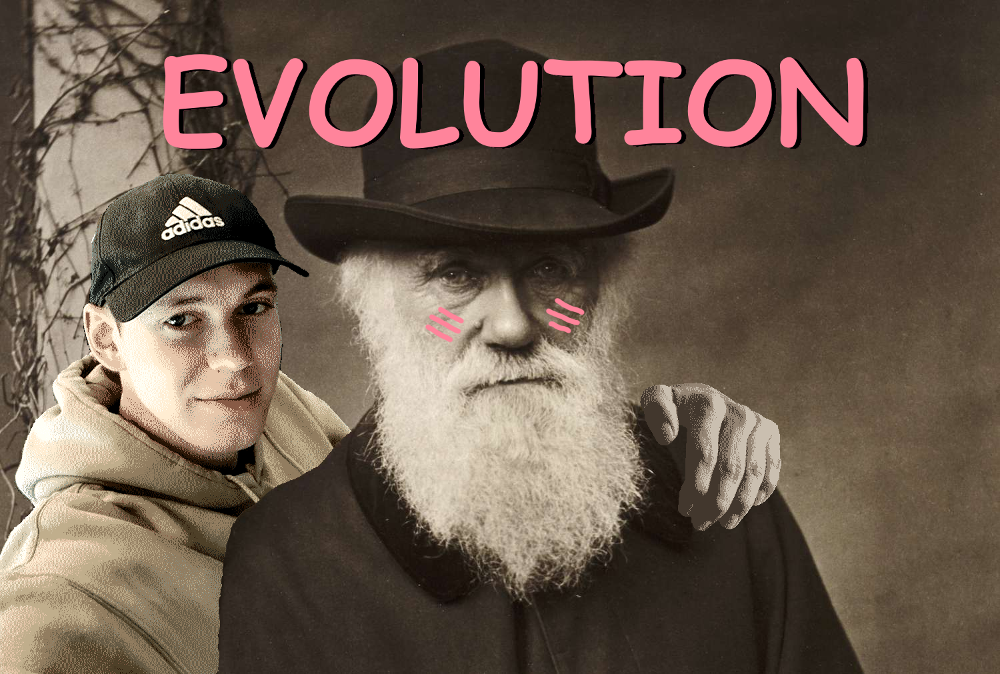

tryck ☝️ så får du se den, men rör inte min slider
inte så lätt va? dra ner slidern lite så kanske din såsiga hjärna kan hänga med
ü§ñ
dags att PIDa
|Kp:
|Ki:
|Kd:
Här är några olika PIDs med olika parametrar, kan väl vara kul att se... den högra kan man ställa in själv
Testa och se om du kan hitta bättre PID-värden än jag och maila dom till mig på: hatiwiy466@temp-mail.org
PIDsen presterar bara bra för att dom inte behöver bry sig om balans, den gasar alltid symetriskt så rotationen alltid är 0 (testa "G" i 1)
F√∂r f√• mer kontroll m√•ste man anv√§nda mer avancerad reglerteknik...üò¥ eller? üò≤
ü߆
Artificiella neuroner
Artificiella neurala nätverk är universella funktionsapproximatorer, så med tillräckligt många lager borde det gå att flyga min drone
Minns du hur NN fungerar? inte...? Här är en recap:
Vi tar ett neuron med 2 inputs och 1 output, neuronen har 2 vikter (W) och en bias (B)
Vår output y = ReLU(W∙X+B)
ReLU är vår aktiveringsfunktion som ger nätverk möjligheten att approximera olinjäritet [ReLU(x) = max(0, x)]
Leaky ReLU är ett alternativ till den vanliga som gör att aktiveringsfunktionen får nollskild derivata för inputs mindre än 0 (vilket inte kommer spela roll här)
Vi har 2 numeriska värden in, 1 numeriskt värde ut i vår neuron: y = f(x1, x2)
Nu kan vi se vad en ensam neuron kan lära sig, addition?
x1
x2
y
0
0
0
1
1
0
1
1
=>
W1
W2
B
X1
X2
Y
=>
Loss
Ställ in träningsvärdena till vänster och tryck "kör"
Kolla outputen Y från den tränade neuronen genom X1, X2
Testa att träna in en OR-gate, AND-gate och XOR-gate.
Fuzzy Logic
Den lär sig genom att minimera en kostnadsfunktion Cost(r, y) = 1/2 * (r - y)^2
Men hur?
üߨ

hänger du me?
üß´
Lager av neuroner
Vi seriekopplar flera neuroner för att approximera mer komplexa funktioner